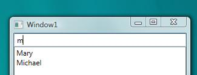
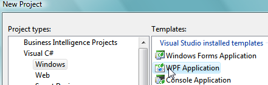
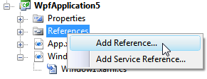
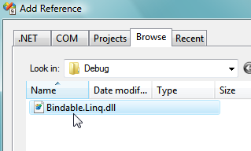

Getting Started with Bindable LINQ
This step-by-step guide will walk you through setting up your first project using Bindable LINQ.
Scenario
In this walkthrough you will create a new Windows Presentation Foundation project which uses Bindable LINQ to filter an array of strings as a user types. It is one of the simplest ways in which Bindable LINQ can be used.

Requirements
Bindable LINQ is compatible with the .NET Framework version 3.5 and above. To follow this guide, you will need to install Microsoft Visual Studio 2008 Standard edition or above, or you can install the free editions of Microsoft Visual C#/VB.NET 2008 Express (todo: link).
Steps
- Download Bindable LINQ
You can either download the latest stable release from the Codeplex releases page, or download the latest source code and build it yourself. To compile the project yourself, read the section "Building Bindable LINQ". - Create a new WPF Application project
Using any edition of Visual Studio 2008 which supports WPF, create a new WPF Application project using either C# or VB.NET.
 - Add a reference to Bindable LINQ
Extract the downloaded archive of Bindable LINQ to a folder of your choosing, or if you built it yourself, locate the build outputs folder (see the Building Bindable LINQ page for details). From Visual Studio, select Add Reference...

From the Browse tab, navigate to the Bindable LINQ directory and add a reference to Bindable.LINQ.dll. This is the only reference you will need.
 - Build the GUI
You will need a ListBox to show the list of names, and a TextBox to filter them.
<DockPanel> <TextBox x:Name="_textBox1" DockPanel.Dock="Top" /> <ListBox x:Name="_listBox1" /> </DockPanel> - Add a using directive for the core Bindable LINQ namespace
In order to use Bindable LINQ, you will need to add a "using" entry for the Bindable.Linq namespace:
using Bindable.Linq;
- Initialize a list of names and write the query
Create an array of first names, and then use a Bindable LINQ query to filter and order them.
public Window1() { InitializeComponent(); var names = new [] { "Paul", "Michael", "Sally", "Sally", "Mary" }; _listBox1.ItemsSource = from n in names.AsBindable() where n.StartsWith( _textBox1.Text, StringComparison.CurrentCultureIgnoreCase ) orderby n select n; } - Run!
The application should compile and run at this point. As you type in the TextBox, Bindable LINQ will detect changes to the TextBox (since you called it from your "where" query), and will re-evaluate the items in the collection.
It's that easy. To see the experience of using standard LINQ to Objects, remove the "AsBindable" call and run the query again.
To see more ways to use Bindable LINQ, see the Examples, Sample Applications, or Bindable LINQ Patterns pages.